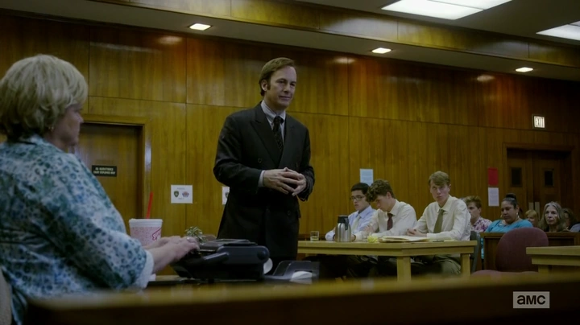
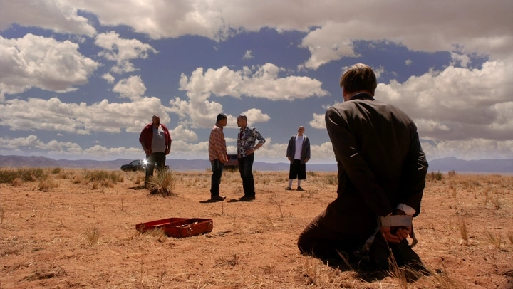
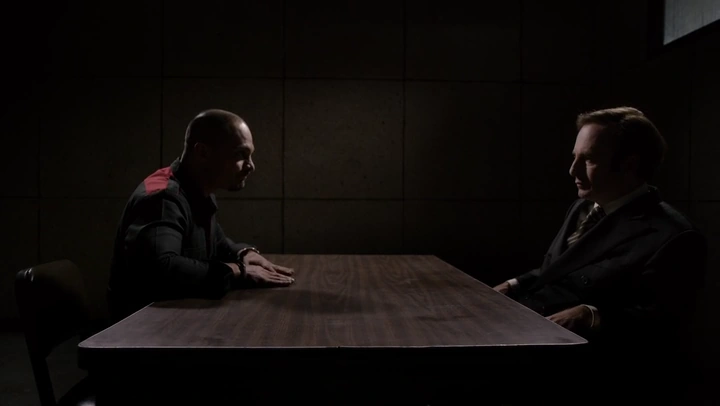
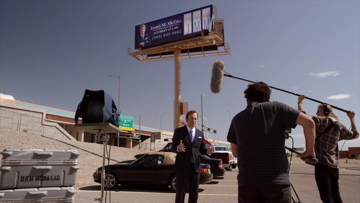
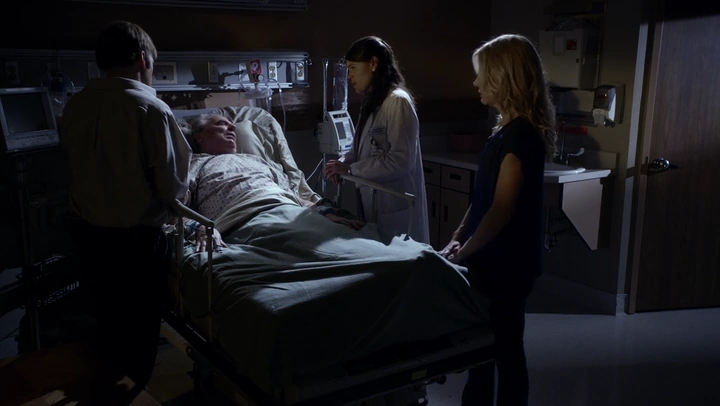
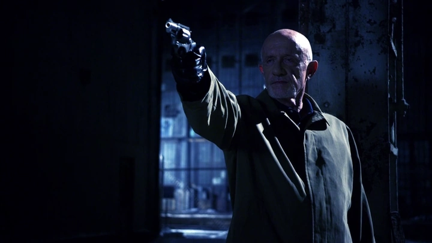
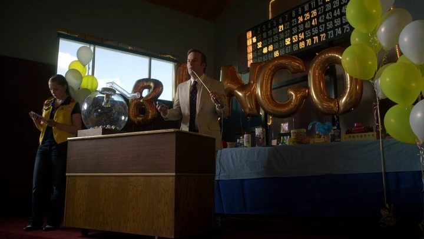
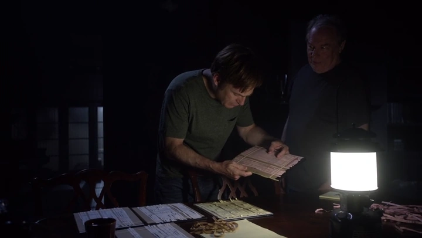
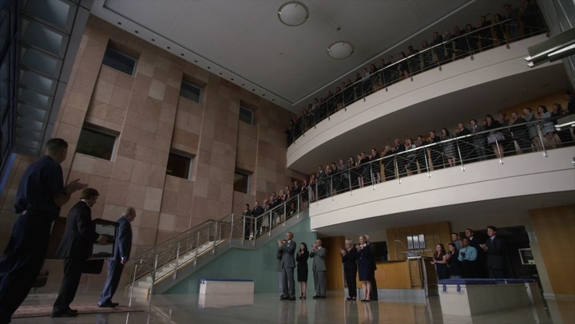
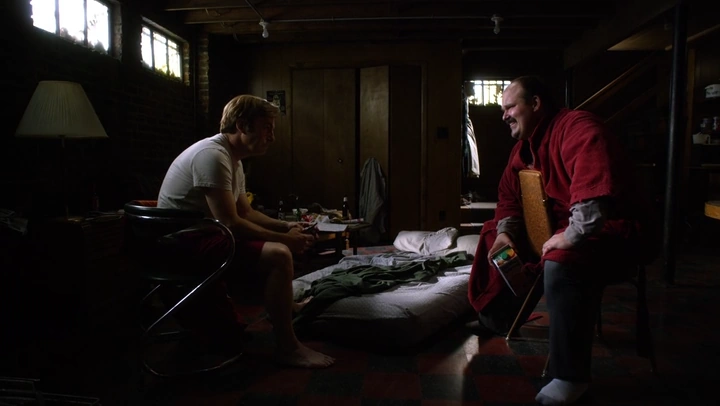

| Episodi 1 — Uno |
En Jimmy McGill intenta deixar enrere el passat mentre sorgeix una gran oportunitat que ho pot canviar tot. |
 |
| Episodi 2 — Mijo |
Un enfrontament amb criminals perillosos obliga en Jimmy a confiar en la seva capacitat de convèncer per sortir-ne viu. |
 |
| Episodi 3 — Nacho |
Amb el seu client en el punt de mira de la policia, en Jimmy intenta desviar la investigació mentre protegeix la seva pròpia pell. |
 |
| Episodi 4 — Hero |
Desesperat per trobar clients, en Jimmy es fa creatiu per generar negoci i, de passada, es cobra una petita revenja. |
 |
| Episodi 5 — Alpine Shepherd Boy |
Clients excèntrics mantenen a flotació en Jimmy mentre l'agorafòbia d'en Chuck deriva en un incident que ho complica tot. |
 |
| Episodi 6 — Five-O |
El passat de policia de l' Mike surt a la llum i l'obliga a encarar un succés tràgic que el persegueix de fa temps. |
 |
| Episodi 7 — Bingo |
Els Kettleman compliquen el cas i en Jimmy amb l' Mike orquestren un pla per recuperar els diners i forçar un acord. |
 |
| Episodi 8 — RICO |
Remenant escombraries, en Jimmy destapa un frau de facturació a Sandpiper i, amb en Chuck, impulsa una demanda col·lectiva. |
 |
| Episodi 9 — Pimento |
Mentre l' Mike destaca en una feina de guardaespatlles, en Chuck bloqueja d'amagat la carrera d'en Jimmy a HHM. |
 |
| Episodi 10 — Marco |
Tocat, en Jimmy es retroba amb en Marco per un últim cop a Cicero i pren un nou rumb que el portarà cap a Saul Goodman. |
 |